Source Editing
|
| Persistence XML editor |
'Browse' button changed to 'Setup' which allows to select an existing configuration file or create a new one.
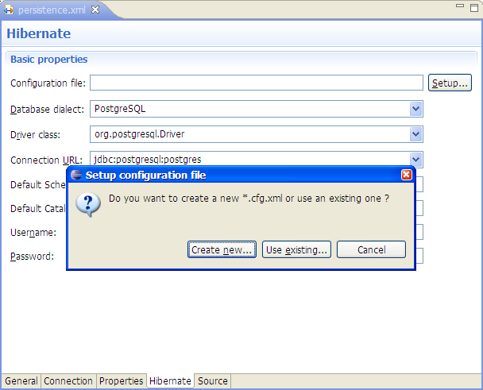
Releated jira
|
|
| Validator problem |
Configuration file location validated by a validator. The validator checks the configuration file's path specified in persistence.xml is valid. It showed an error when relative path was used.
Releated jira
|
|
| Reverse engineering editor |
At the 'Table & Columns' tab was a checkbox 'Exclude column from reverse engineering'
which added the attribute 'exclude' to 'key-column' element. But according to DTD the element
doesn't have the attribute. Wrong ui was removed.
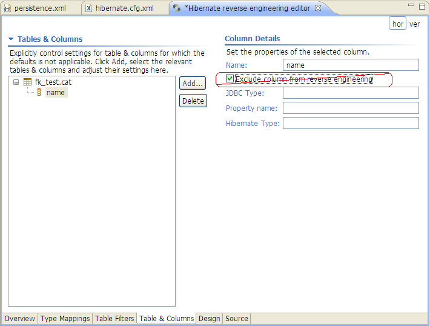
Releated jira
|
Hibernate Mapping Wizard
|
| Filter empty packages |
At New Hibernate Mapping Wizard in 'Add Package' dialog empty packages(without java classes) are not shown now.
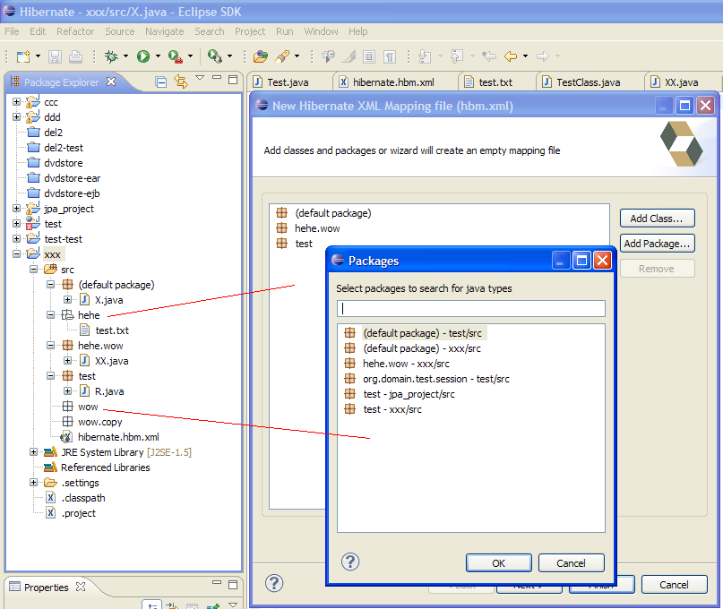
Releated jira
|
Refactoring
|
| Code Generation Configurations |
The code generation configurations now listen to the Refactoring changes.
Allowing to output directory, template directory, reverse engineering file paths
to be changed automatically.
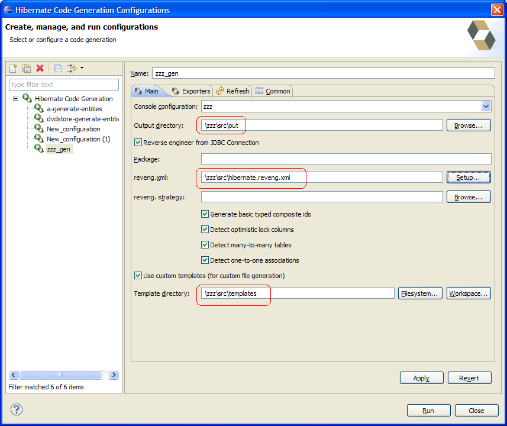
Also output directory set for each exporter are updated automatically.
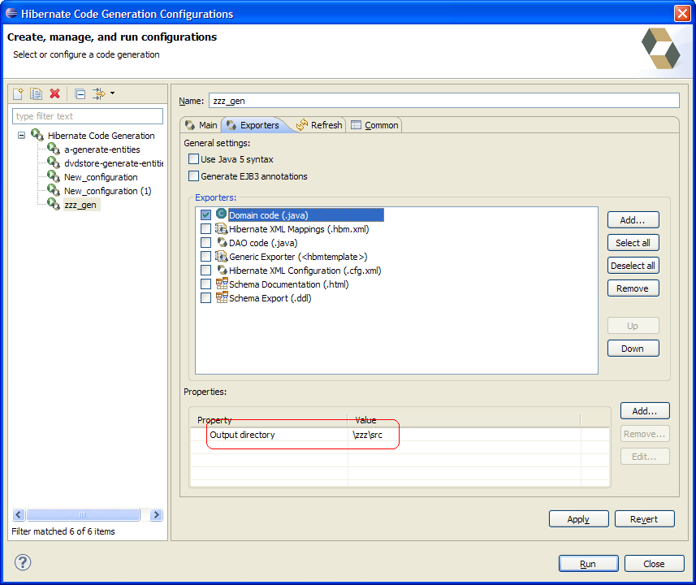
Releated jira
|
Move to Hibernate 3.3.2
|
| Hibernate Tools are using Hibernate 3.3.2 |
Hibernate Tools where moved to use Hibernate 3.3.2 instead of Hibernate 3.2.x.
Releated jira
|
Close console configuration
|
| Ability to close Hibernate Console Configuration |
The ability to explicitly close the database connection and unlock all jars which are used by Hibernate Console Configuration.
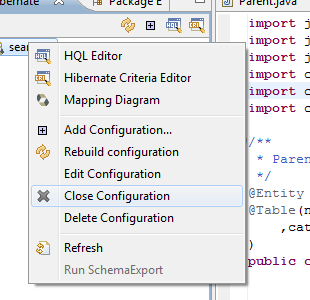
Releated jira
|
"HQL Editor" and "Hibernate Criteria Editor"
|
| Stick results to one tab |
Make "HQL Editor" & "Hibernate Criteria Editor" "sticky" with respect to some tab in "Hibernate Query Result" view
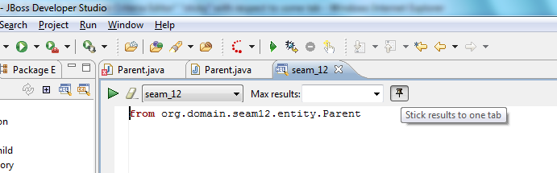
Releated jira
|
| Rename query result tab |
In case of too long query - add possibility to rename query tabs
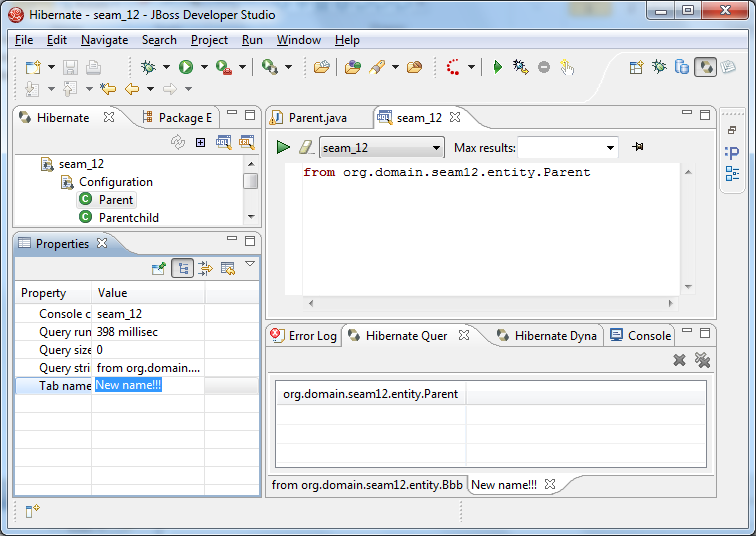
Releated jira
|
Unify interface for "Generate Hibernate/JPA annotations" refactoring and "Hibernate XML Mapping file (hbm.xml)" wizard
|
| Unify interface |
Now "Generate Hibernate/JPA annotations" refactoring and "Hibernate XML Mapping file (hbm.xml)" wizard
has similar UI. Possible to view changes for existing hbm.xml files.
"Generate Hibernate/JPA annotations" refactoring page 1
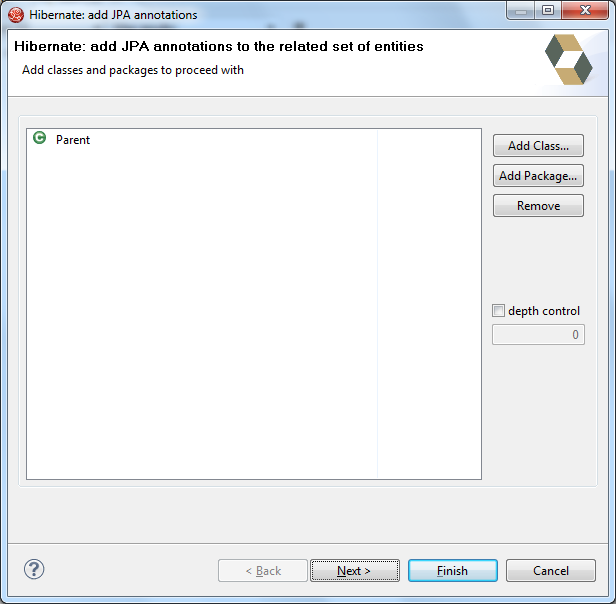
"Generate Hibernate/JPA annotations" refactoring page 2
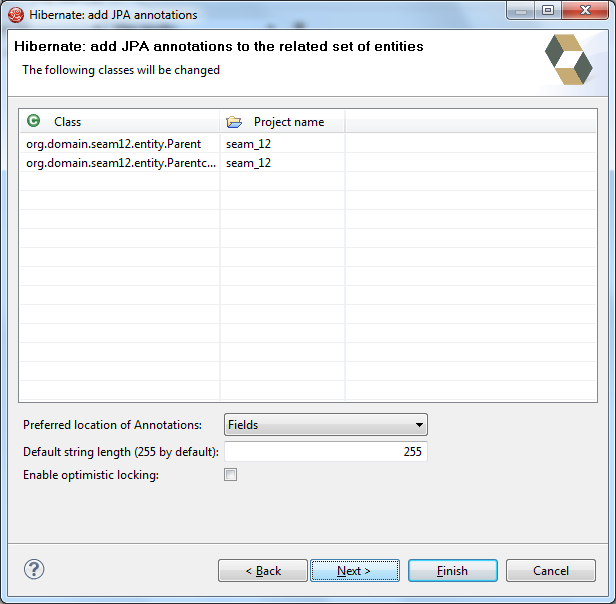
"Generate Hibernate/JPA annotations" refactoring page 3
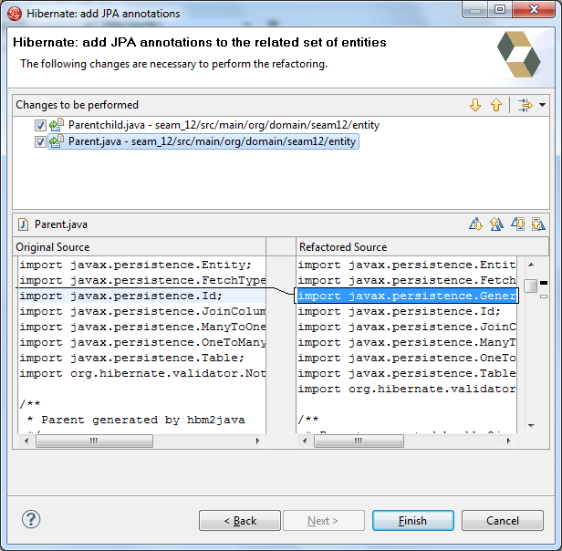
"Hibernate XML Mapping file (hbm.xml)" wizard page 1
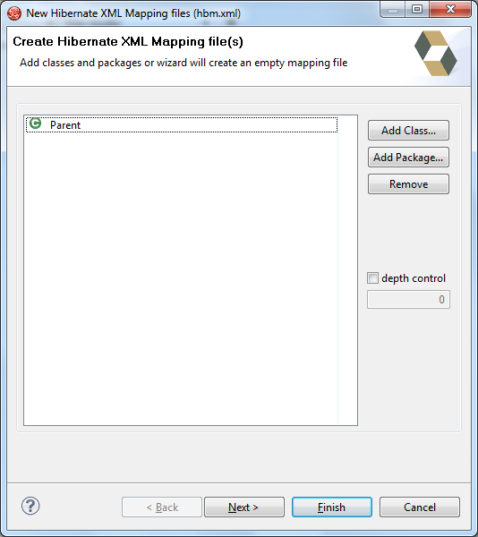
"Hibernate XML Mapping file (hbm.xml)" wizard page 2
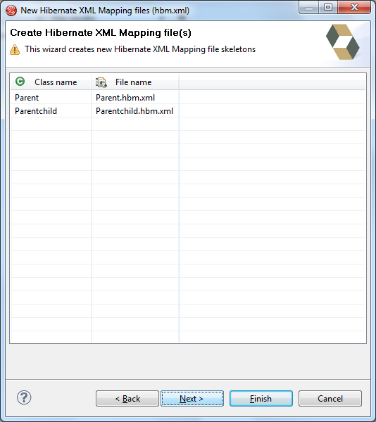
"Hibernate XML Mapping file (hbm.xml)" wizard page 3
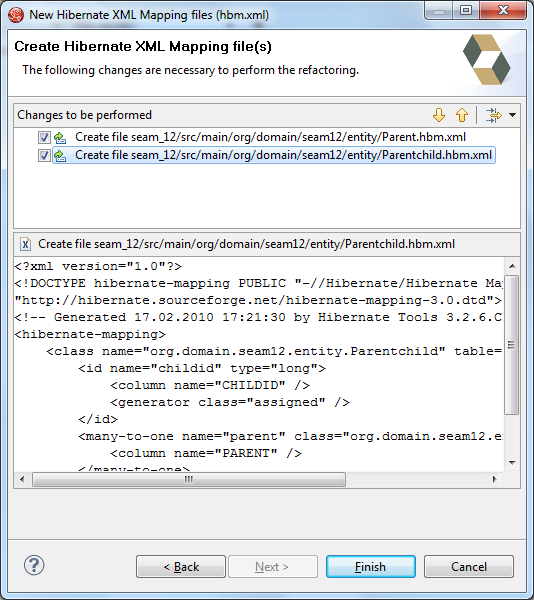
Releated jira
Releated jira
|
Diagram Viewer show properties for selected item
|
| Properties for selected item |
Association properties
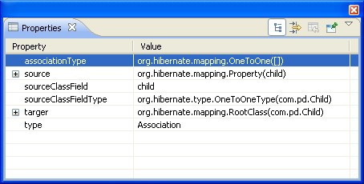
Class mapping properties
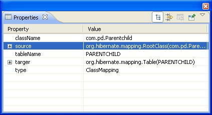
Diagram properties
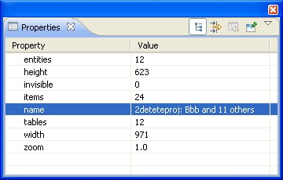
Entity properties
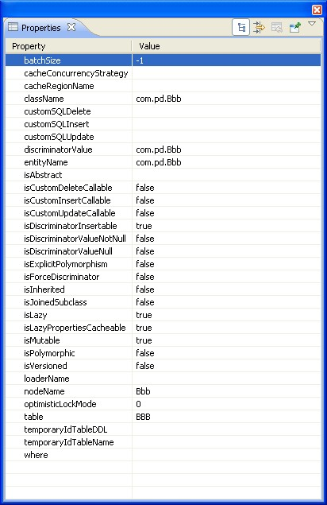
Foreign key constraint properties
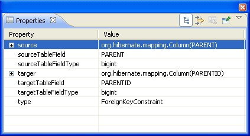
Property mapping properties
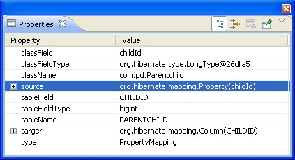
Table properties
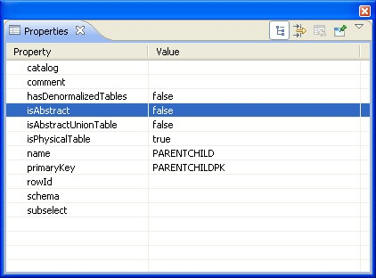
Releated jira
|